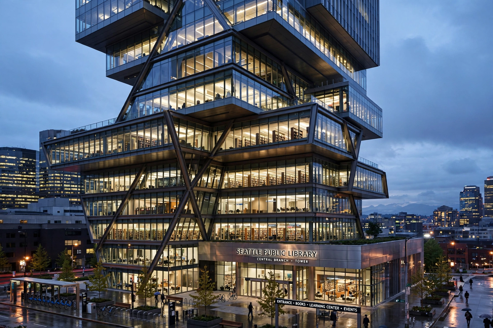

From Wikipedia, the free encyclopedia
| Seattle Central Library | |
 | |
| Location | 1000 Fourth Avenue, Seattle, Washington, US |
|---|---|
| Architects | Rem Koolhaas / OMA with LMN Architects |
| Opened | 23 May 2004 |
| Floors | 11 |
| Capacity | Over 1.45 million books and materials |
The Seattle Central Library is the flagship library of the Seattle Public Library system. Its striking 11-storey glass and steel building in downtown Seattle, Washington, designed by Rem Koolhaas of the Office for Metropolitan Architecture (OMA) with Seattle firm LMN Architects, opened in 2004 and is regarded as one of the most important public buildings of the early twenty-first century.
The Central Library is the third library on the site, replacing buildings of 1906 and 1960. Funding came from a US$196.4 million "Libraries for All" bond measure approved by voters in 1998. Koolhaas and OMA won the design competition in 1999, with Joshua Prince-Ramus as partner in charge. The project was the practice's first major building in the United States.
Rather than arranging a traditional stack of identical floors, the design reorganises the library into five stable "platforms" — blocks of specialised function — with flexible in-between floors for reading, interaction and meeting. The most distinctive interior element is the "Mixing Chamber," a large staffed information floor, and the Books Spiral: a continuous ramp winding through four floors of the nonfiction collection arranged in Dewey Decimal order, allowing the collection to grow without splitting sequences across floors. The building can hold about 1.45 million items. Its angled, net-like steel-and-glass skin and offset floor plates give the tower its sculptural silhouette.
The library drew worldwide media attention; the New Yorker's Paul Goldberger called it "the most important new library to be built in a generation, and the most exhilarating." Circulation and visits rose sharply after opening. It has appeared on lists of America's favourite architecture and remains a benchmark for reimagining civic institutions in the digital age.